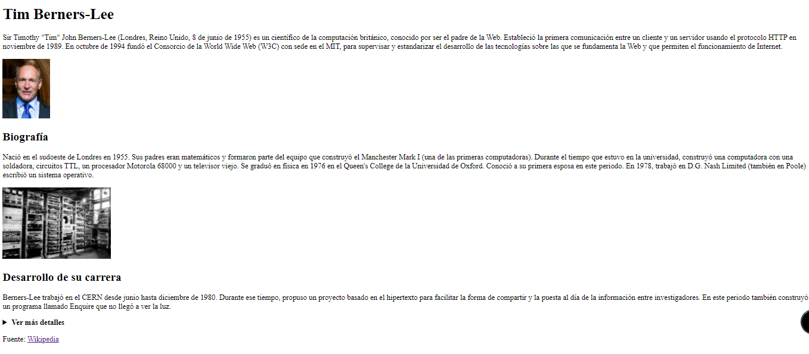
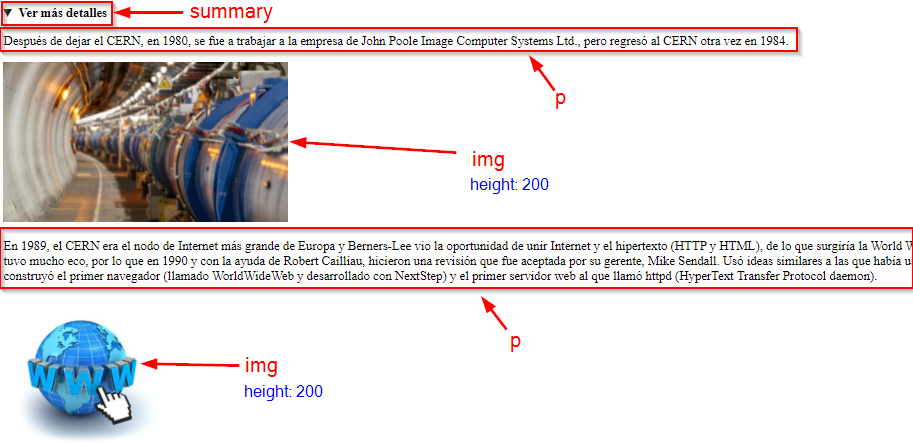

SA1 - Actividad 1
En esta actividad debes elaborar la siguiente página web:

A continuación tienes las pautas que debes seguir:
- Descárgate los archivos necesarios que están adjuntos a la tarea (actividad1.zip). Descomprime el archivo y asegúrate de que comienzas a trabajar dentro de una carpeta llamada actividad1
- En el archivo texto.txt tienes todo el texto para que lo puedas copiar y pegar más fácilmente en la web. También tienes las imágenes descargadas en la carpeta imagenes
- Deberás crear un archivo index.html dentro de la carpeta actividad1. Aquí es donde escribirás el código HTML para elaborar la web.
- IMPORTANTE: debes añadir la estructura adecuada de las etiquetas DOCTYPE, HTML, HEAD, META, TITLE, BODY…
- Ponle de título (etiqueta TITLE): Tim Berners-Lee
- Aquí tienes la referencia completa de todas las etiquetas HTML para que te sirva de ayuda: https://www.w3schools.com/tags/default.asp
- También puedes consultar los apuntes
- A continuación tienes una imagen donde puedes ver las etiquetas que debes utilizar para hacer cada una de las partes de la web:

Para poder hacer la parte desplegable de la etiqueta details:

Entrega
- NO OLVIDES validar tu página en el validador (https://validator.w3.org/) antes de subirla
- Comprime la carpeta de la actividad (donde tienes todos los archivos, incluidos el HTML y las imágenes) y súbelo a la tarea de Aules. Llama al archivo actividad1
.zip_ (y sustituye _ _ por tu nombre y apellidos).